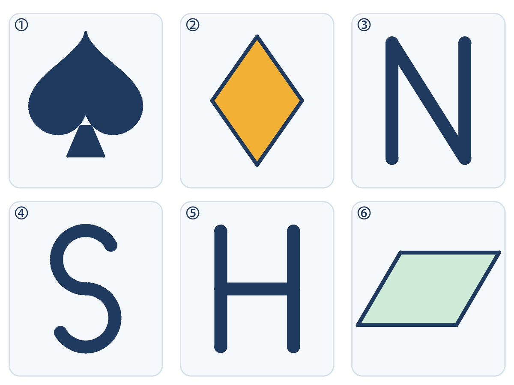
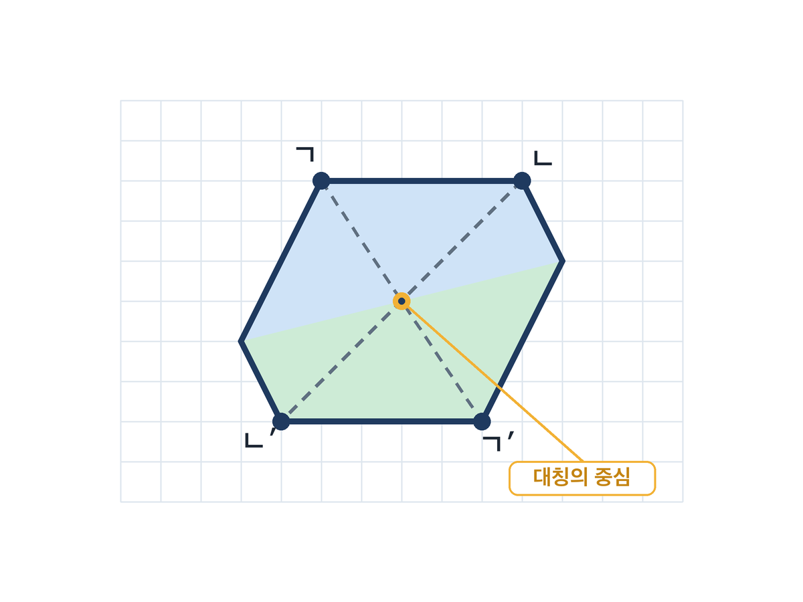
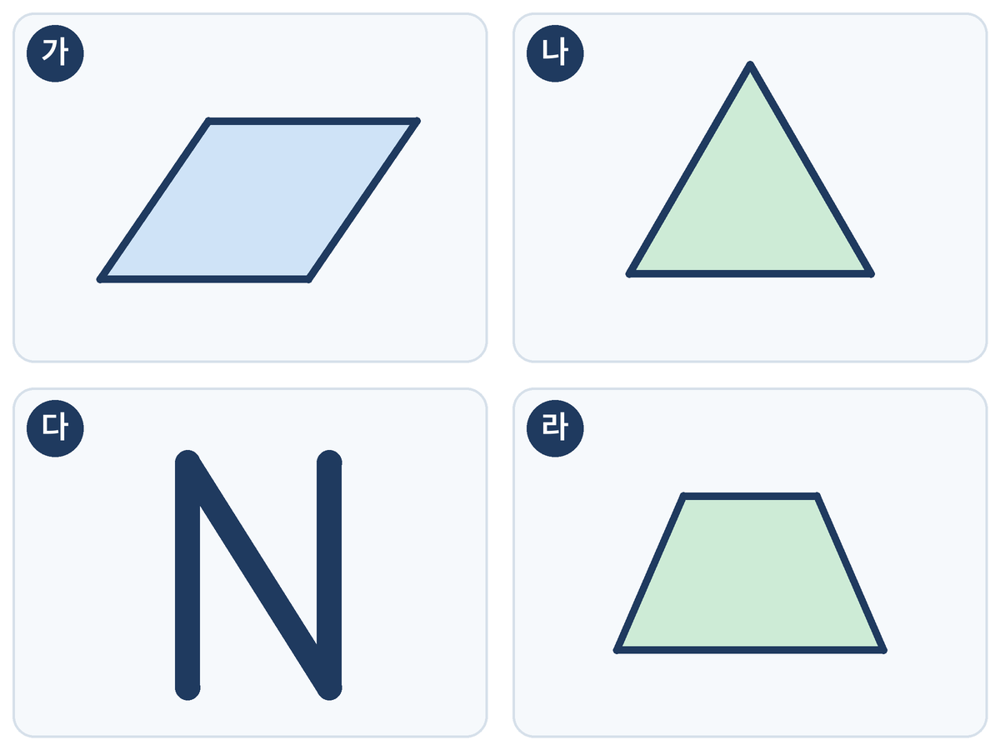
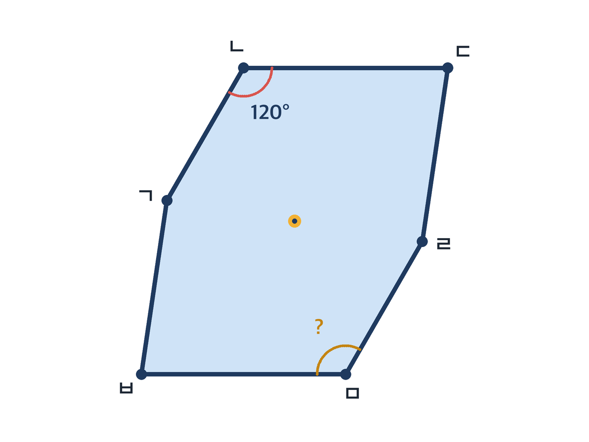
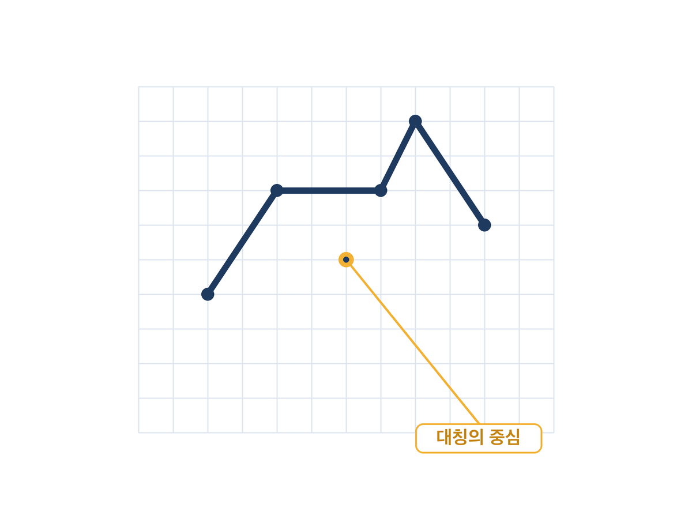
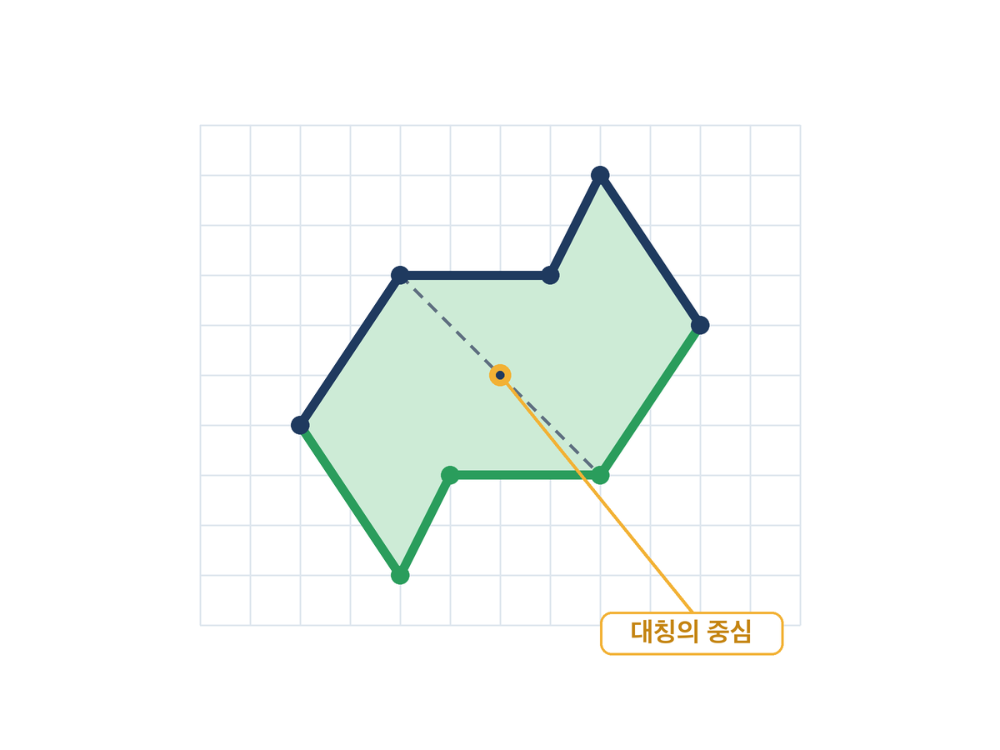
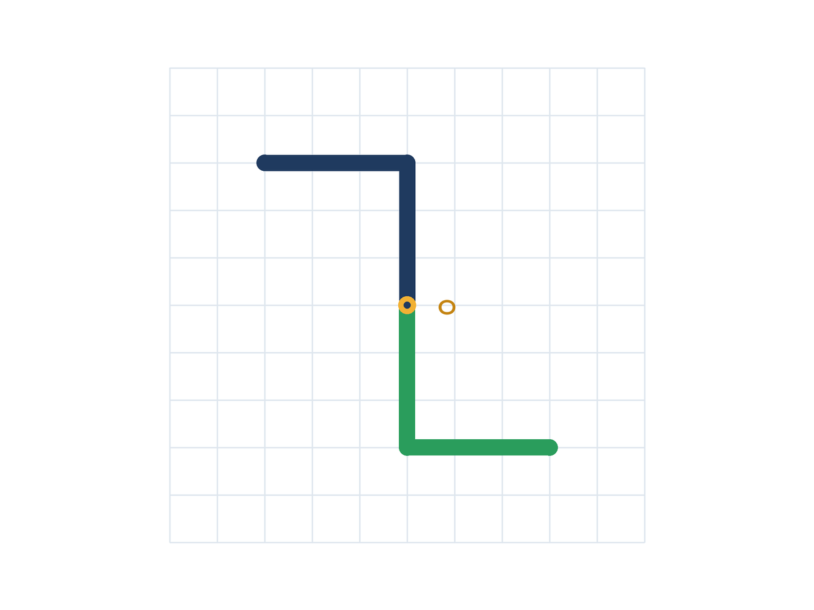
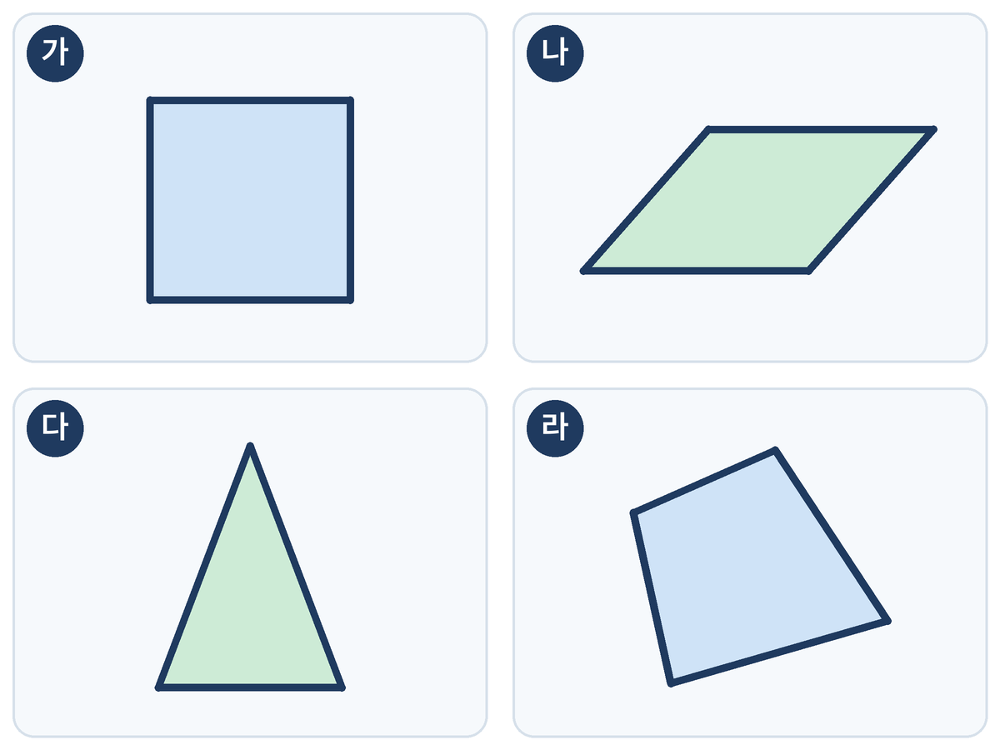
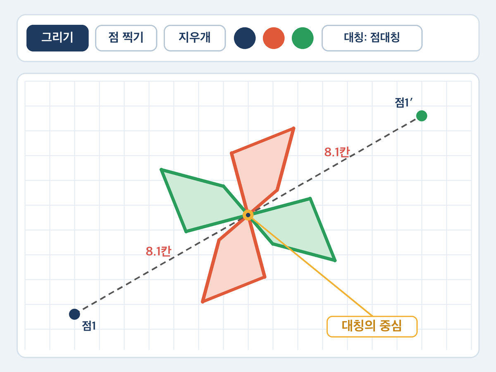

4편 · 문제 출제단 — 점대칭도형, 좋은 문제를 가려내라
비상 수학 5-2 3단원 합동과 대칭 · 점대칭도형과 그 성질 · 40분 · 2026-10-26 게시
점대칭 그림판 열기 →선택 자료 · '대칭' 버튼을 눌러 세로 → 가로 → 점대칭으로 바꿔요. 로그인 없음 · 아무것도 저장하지 않음
학습 목표
- 한 점을 중심으로 180° 돌렸을 때 처음 도형과 완전히 겹치는 도형을 점대칭도형, 그 점을 대칭의 중심이라 부를 수 있다.
- 점대칭도형의 성질(대응변의 길이와 대응각의 크기가 같다 · 대응점을 이은 선분은 대칭의 중심을 지난다 · 대칭의 중심은 그 선분을 둘로 똑같이 나눈다)을 근거로 문제를 풀고, 문제가 좋은 문제인지 판단하며, 새 문제를 만들 수 있다.
설계 의도
점대칭은 선대칭보다 어렵습니다. "돌린다"는 동작이 머릿속에서 잘 그려지지 않고, 대응점을 이은 선분이 대칭의 중심을 지난다는 성질은 외워도 문제에서 꺼내 쓰지 못합니다. 그래서 이 수업은 아이들을 문제 푸는 사람에서 문제를 고르고 만드는 사람으로 옮깁니다.
모둠은 문제 카드 12장을 풀고 나서, 카드마다 "좋은 문제인가"를 세 기준(정답이 하나인가 · 점대칭 개념을 묻는가 · 그림과 숫자가 정확한가)으로 별점 매기고, 마지막에 자기 모둠 문제를 만들어 옆 모둠과 바꿔 풉니다. 문제를 판단하려면 성질을 근거로 꺼내 써야 하므로, 성질이 자연스럽게 도구가 됩니다.
AI의 자리는 '출제 보조'입니다. 교사는 수업 전에 NotebookLM에 교과서 해당 쪽과 아래 출제 가이드를 소스로 넣어 문제를 뽑습니다. 꾸러미의 기본 카드 12장 중 두 장(⑪⑫)은 일부러 흠을 넣은 문제(답을 정할 수 없는 문제, 그림이 점대칭이 아닌 문제)이고, 카드에는 표시하지 않았습니다. 아이들이 이걸 잡아내면 "AI가 만든 문제도 사람이 검토해야 한다"는 메시지가 저절로 나옵니다. 1편(문제를 만드는 AI) → 2편(틀릴 수 있는 AI) → 3편(도구를 만들어 주는 AI) → 4편(출제를 도와주지만 검토는 사람이 하는 AI). 카드 그림은 코드로 정확히 그렸고, 점대칭 도형의 나머지 절반은 좌표를 실제로 180° 돌려 그렸습니다.
40분 흐름
| 분 | 단계 | 교사 | 학생 | 자료 |
|---|---|---|---|---|
| 0~5 | 도입 '돌려도 그대로?' | 스페이드·다이아·N·S·H·평행사변형을 띄우고 "180° 돌리면 똑같을까?" 투표. 3편 거울 그림판(접기)으로는 겹치지 않는 도형이 있음을 짚음 | 투표, 이유 한 마디 | 덱 |
| 5~15 | 개념 AIDT 돌려서 겹치기 | AIDT 점대칭도형 차시에서 180° 돌려 겹치는 조작으로 점대칭도형·대칭의 중심 명명. (선택) 점대칭 그림판으로 대응점을 이은 선분이 중심을 지나고 양쪽 거리가 같음을 한 번 보여 주기 | 조작, 대칭의 중심 찾기 | 비상 AIDT, 덱, (선택) 점대칭 그림판 |
| 15~35 | 활동 문제 출제단 (모둠) | ① 풀기(7분): 카드 12장을 나눠 풀고 활동지 앞면에 답 적기. ② 검토(7분): 카드마다 세 기준 ○×, 별점(1~3), 고칠 점 한 줄 → "별 1개짜리는 몇 번?" 발표 → ⑪⑫가 왜 나쁜 문제인지 공개. ③ 출제(6분): 모둠 문제 1개를 만들고 옆 모둠과 바꿔 풀기 | 풀기·검토·별점·출제·교환 | 문제 카드, 활동지 |
| 35~40 | 정리 AIDT 평가 + 성질 한 줄 | 좋은 문제의 조건을 교과서 성질과 연결. AIDT 형성평가 2~3문항. "대응점을 이은 선분은 대칭의 ___을 지나고, 대칭의 중심은 그 선분을 ___로 똑같이 나눈다" | 개별 평가, 한 줄 정리 | AIDT, 덱 |
내려받기
- 수업 덱 (PPTX)13장 · 고쳐 쓰기용
- 수업 덱 (PDF)13장 · 바로 띄우기용
- 문제 카드 (PDF)12장 · A4 3쪽, 한 쪽에 4장
- 활동지 (PDF)A4 앞뒤 · 모둠당 1장
- 교사용 흐름 (PDF)흐름표 · 정답·해설 · 프롬프트
NotebookLM 프롬프트 카드 (교사용 · 우리 반 문제 카드 더 만들기)
소스: ① 비상 수학 5-2 교과서 '점대칭도형과 그 성질' 쪽(본인 교과서를 촬영·PDF로 넣기 — 꾸러미에는 교과서 본문을 싣지 않았습니다) ② 아래 출제 가이드 문장.
① 출제 가이드 (소스로 넣는 문장)
초등 5학년 수학 점대칭도형 단원. 문제는 ① 정답이 하나여야 하고 ② 대칭의 중심·대응점·대응변·대응각·180° 돌리기 중 하나 이상을 반드시 쓰며 ③ 그림이 필요한 문제는 '그림 설명'을 글로 정확히 적는다(예: 평행사변형 ㄱㄴㄷㄹ, 변 ㄱㄴ 6cm). 난이도는 쉬움 4·보통 6·어려움 2.
② 생성 프롬프트
소스를 바탕으로 점대칭도형 문제 12개를 만들어 줘. 각 문제에 번호, 문제, 정답, 한 줄 해설을 붙이고, 출제 가이드의 세 조건을 지켰는지 스스로 점검한 표를 마지막에 넣어 줘.
③ 검토 기준 (교사 검토 · 학생 활동 공통)
1. 정답이 하나뿐인가? 2. 점대칭 개념(대칭의 중심·대응점·180° 돌리기)을 묻는가? 3. 그림과 숫자가 정확한가? 별점: 셋 다 ○ = ★★★, 둘 = ★★, 하나 이하 = ★
생성된 문제는 세 기준으로 거르고, 그림 설명은 직접 그려 실제로 점대칭인지 확인합니다. 흠이 있는 문제 1~2개는 버리지 말고 검토용 카드로 남깁니다(⑪⑫처럼).
그림








